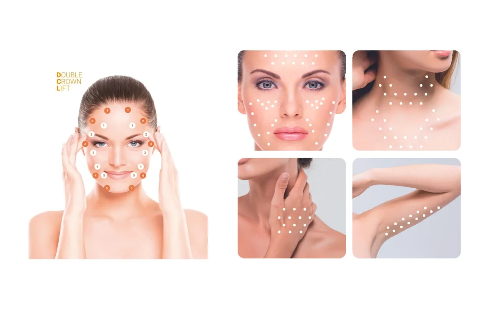
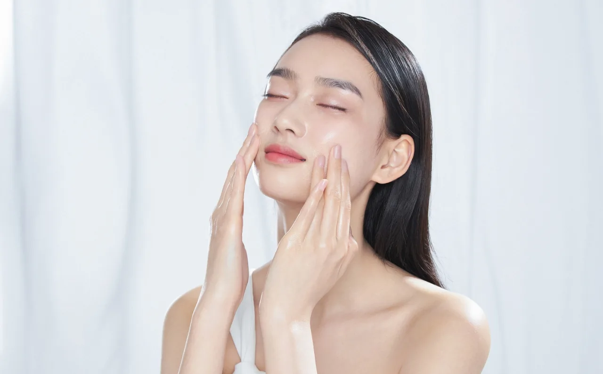

As we age, maintaining healthy, radiant skin becomes increasingly important and often more challenging. The natural ageing process, combined with environmental factors and lifestyle choices, leads to the gradual decline of collagen production, skin elasticity, and hydration. This is where Revok50 steps in as a solution.
Combining the power of stabilised hyaluronic acid and essential amino acids, Revok50 is a certified Class III medical item designed for intradermal injections. This skin booster not only revitalises and rehydrates the skin but also stimulates collagen synthesis, ensuring a renewed and youthful appearance.
Skin health and anti-ageing treatments are crucial for everyone, regardless of age. Healthy skin boosts confidence and overall well-being, and the right treatments can significantly slow down the ageing process. Anti-ageing treatments, such as Revok50, play a vital role in enhancing the skin’s natural beauty, repairing damage, and promoting long-term health.
The purpose of this blog is to explore why Revok50 is beneficial for individuals at different stages of life. Whether you’re in your 20s, 40s, or 60s, Revok50 offers unique benefits tailored to your skin’s needs, helping you achieve and maintain a vibrant, youthful complexion.
What is Revok50?

Revok50 is a skin booster formulated to rejuvenate and hydrate the skin. It is composed of stabilised hyaluronic acid and essential amino acids, including L-hydroxyproline, glycine, and L-lysine HCI. As a certified Class III medical item, Revok50 is designed for intradermal injections, ensuring precise delivery of its potent ingredients directly into the skin.
How it Works

Revok50 works through several key mechanisms to enhance skin health and appearance:
- Promotes Collagen Synthesis: The amino acids in Revok50 stimulate fibroblasts, the cells responsible for producing collagen. This helps to restore and maintain the skin’s structural integrity, reducing wrinkles and fine lines.
- Maintains the Extracellular Matrix: Hyaluronic acid, a major component of the extracellular matrix, helps to stabilise the electrolyte equilibrium and improve biochemical processes. This leads to healthier, more resilient skin.
- High Concentration and High Molecular Weight for Prolonged Effects: With a molecular weight of 2,200 kDa, the hyaluronic acid in Revok50 is less susceptible to breakdown by endogenous hyaluronidase. This ensures longer-lasting hydration and rejuvenation effects compared to other products on the market. Additionally, its concentration is 2.5 times higher than similar products, providing enhanced benefits.
Benefits of Revok50 for Younger Adults (20s-30s)

Importance of Early Skincare
In our 20s and 30s, our skin is still relatively youthful and resilient. However, this is a critical time to establish a proactive skincare routine to maintain skin health and prevent premature aging. By incorporating effective treatments like Revok50 early on, younger adults can lay the foundation for long-term skin vitality and radiance.
Specific Benefits for Younger Skin
- Prevents Early Signs of Ageing: Revok50’s combination of hyaluronic acid and amino acids helps to combat the first signs of ageing, such as fine lines and uneven texture. By nourishing the skin from within, it promotes a smoother, more youthful complexion.
- Enhances Skin Hydration: Younger skin tends to be more prone to dehydration due to environmental factors and lifestyle choices. Revok50’s hyaluronic acid content replenishes moisture levels, restoring a healthy and supple appearance.
- Boosts Collagen Production: Collagen production begins to decline in our late 20s, leading to the gradual loss of firmness and elasticity. Revok50 stimulates collagen synthesis, helping to maintain skin firmness and prevent sagging over time.
Tips for Incorporating Revok50 into a Skincare Routine
- Consult with a Dermatologist: Before incorporating any new skincare product, it’s essential to consult with a dermatologist to determine the most suitable treatment plan for your skin type and concerns.
- Consistency is Key: To maximise the benefits of Revok50, consistency is crucial. Incorporate it into your daily skincare routine as directed by your dermatologist or healthcare provider.
- Pair with Sun Protection: While Revok50 offers rejuvenating benefits, it’s essential to complement it with sun protection. Use a broad-spectrum sunscreen with SPF 30 or higher daily to shield your skin from harmful UV rays and prevent premature ageing.
By starting early and taking proactive steps to care for their skin, younger adults can enjoy the lasting benefits of Revok50 and maintain a youthful complexion for years to come.
Benefits of Revok50 for Middle-Aged Adults (40s-50s)
Addressing Mid-Life Skin Concerns
As we transition into our 40s and 50s, our skin undergoes significant changes due to hormonal shifts, environmental factors, and the cumulative effects of aging. Middle-aged adults commonly experience several skin concerns, including:
- Wrinkles and Fine Lines: The appearance of wrinkles and fine lines becomes more pronounced as collagen and elastin production declines, leading to visible signs of ageing.
- Loss of Elasticity: Skin elasticity diminishes over time, resulting in sagging and a lack of firmness, especially around the jawline and cheeks.
- Dullness: Cell turnover slows down, causing a buildup of dead skin cells and a dull, lackluster complexion.
How Revok50 Helps Maintain Youthful Skin
Revok50 is formulated to address the specific needs of middle-aged skin, offering a range of benefits to promote a more youthful appearance:
- Revitalises and Rehydrates Skin: The high molecular weight hyaluronic acid in Revok50 deeply hydrates the skin, restoring moisture levels and improving overall radiance. By replenishing hydration from within, it helps to plump up fine lines and wrinkles, creating a smoother and more youthful complexion.
- Slows Down Cellular Apoptosis: Revok50 contains amino acids that help to slow down cellular apoptosis, the natural process of cell death. By supporting cellular health and function, it contributes to the renewal and regeneration of the skin, minimizing the appearance of ageing.
- Offers Anti-inflammatory and Restorative Effects: The anti-inflammatory properties of Revok50 help to soothe irritated skin and reduce redness, while its restorative effects promote healing and repair. This helps to improve skin tone and texture, restoring a more youthful and vibrant complexion.
With Revok50, middle-aged adults can effectively address the common concerns associated with ageing skin, revitalising their complexion and maintaining a youthful glow.
Benefits of Revok50 for Seniors (60+)
1. Challenges of Ageing Skin
As individuals enter their senior years, the ageing process takes a toll on the skin, resulting in a variety of challenges:
- Decreased Collagen Production: Collagen production significantly declines with age, leading to a loss of skin elasticity and firmness.
- Increased Dryness: Ageing skin tends to become drier as the skin’s natural moisture barrier weakens, resulting in roughness and flakiness.
- More Pronounced Wrinkles: The cumulative effects of sun damage, environmental exposure, and the natural ageing process contribute to the formation of deeper wrinkles and fine lines.
2. How Revok50 Can Improve Skin Quality for Seniors
Revok50 offers a comprehensive solution to address the specific needs of seniors’ ageing skin, providing a range of benefits to promote skin health and vitality:
- Regenerates and Repairs Skin: Revok50’s advanced formula contains ingredients that stimulate cellular regeneration and repair, helping to rejuvenate ageing skin from within. By promoting the production of new, healthy skin cells, it reduces the appearance of wrinkles and improves overall skin texture.
- Stabilises Electrolyte Equilibrium of the Extracellular Matrix: The electrolyte equilibrium of the extracellular matrix is essential for maintaining skin hydration and resilience. Revok50 helps to stabilise this equilibrium, ensuring optimal moisture levels and supporting skin barrier function.
- Prolonged Treatment Outcomes Due to Higher Molecular Weight: With its high molecular weight of hyaluronic acid, Revok50 offers prolonged treatment outcomes compared to other products on the market. Its formulation ensures deep hydration and rejuvenation, resulting in long-lasting improvements in skin quality and appearance.
Seniors can effectively combat the effects of ageing on their skin, restoring a more youthful and radiant complexion with Revok50!
In the pursuit of healthy, vibrant skin, age should never be a barrier. Regardless of your stage in life, maintaining skin health is paramount for overall well-being and confidence. As we’ve explored, Revok50 provides a solution tailored to address the diverse needs of individuals of every age.
With its blend of stabilised hyaluronic acid and essential amino acids, Revok50 provides a holistic approach to skincare, promoting collagen synthesis, hydrating the skin, and combating signs of ageing.
As we conclude, we encourage you to consider integrating Revok50 into your skincare routine, regardless of your age. By taking proactive steps to care for your skin now, you can enjoy the long-term benefits of a youthful, radiant complexion.
If you’re considering the treatment, our LCP-certified professionals are here to help! Our consultations are designed to assess your skin concerns and needs and provide the most suitable treatments to reach your goals.
Contact us now!
Categories
Related treatments